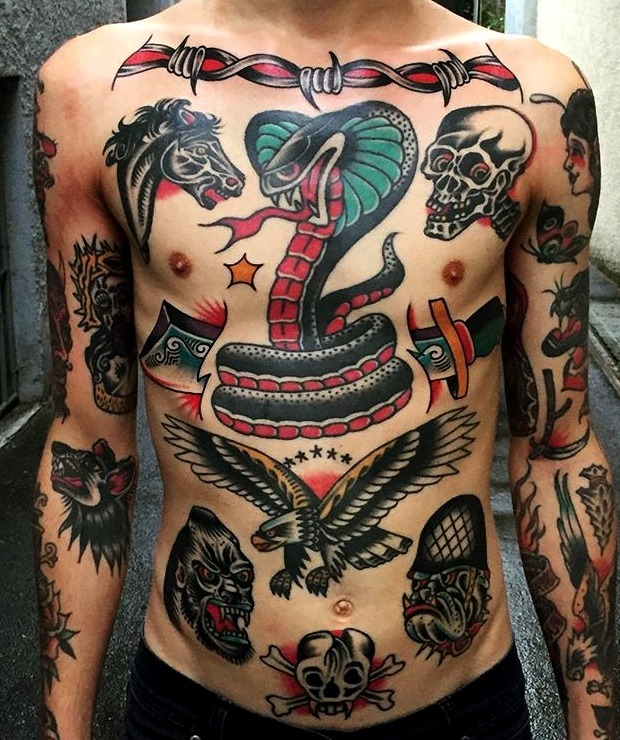
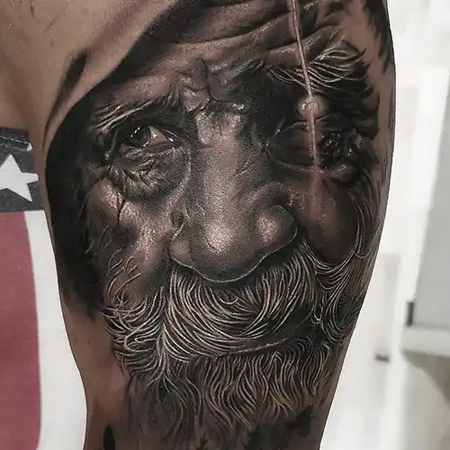
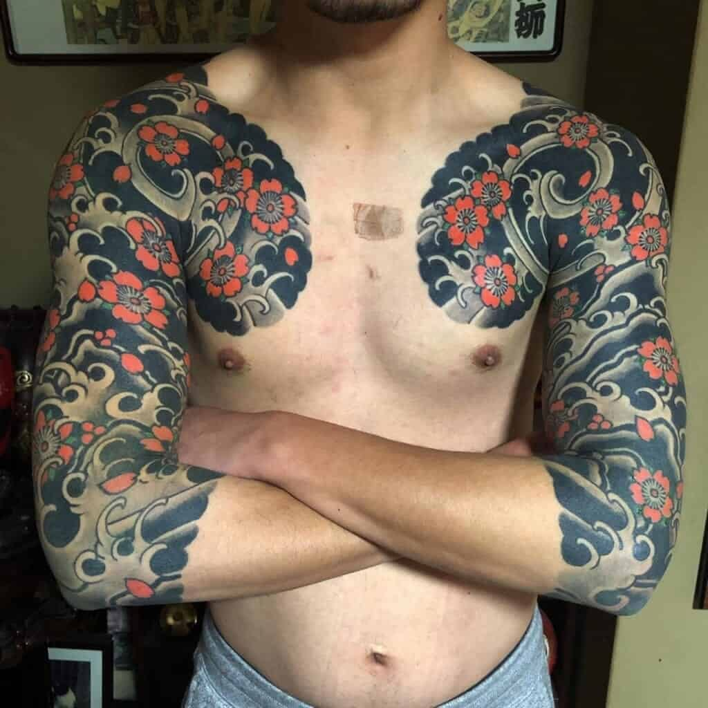

Si no tienes claro el estilo de tu próximo tatuaje te aconsejamos que les eches un vistazo a estos estilos que ofrecemos de la mano de los mejores tatuadores
En nuestra página web encontrarás una descripción e ilustraciones de los estilos de tatuajes que manejamos para que así te ayude a decidirte
Recuerda que también puedes visitar el apartado de "GALERÍA" para una mejor visión del estilo de tatuaje
BLACKWORK
OLDSCHOOL
REALSITA
TRADICIONAL JAPONÉS